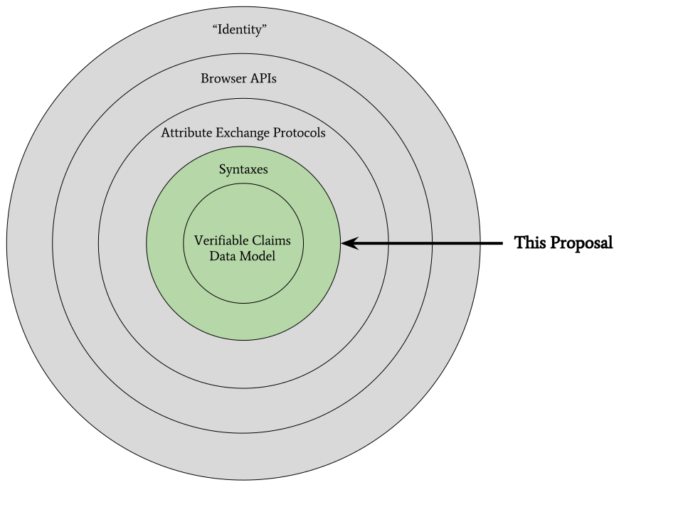

[EDITOR'S DRAFT] Verifiable Claims Working Group Frequently Asked Questions
The mission of the Verifiable Claims Working Group is to make expressing,
exchanging, and verifying claims easier and more secure on the Web. Please
review the draft charter if you have not already done so.
What problem is this work attempting to address?
There is currently no widely used
self-sovereign
and privacy-enhancing standard
for expressing and transacting verifiable claims (aka: credentials,
attestations) via the Web.
These problems exist today:
-
There is no standard that makes it easy for users to assert their verifiable
qualifications to a service provider (e.g. my loyalty card number is X, I
have an account at Bank Y, I am over the age of 21, I am a citizen of the USA,
I am a Chartered Financial Analyst, etc.). As a result, manual input and
fraud on the Web are higher than desired.
-
In existing attribute exchange architectures (like SAML, OpenID Connect, Login
with SuperProviderX, etc.), users, and their verifiable claims, do not
independently exist from service providers. This means users can't easily
change their service provider without losing their digital identity. This
leads to vendor lock-in, identity fragility, reduced competition in the
marketplace, and reduced privacy for all stakeholders.
-
There is no interoperable standard capable of expressing and transmitting
rich verifiable claims that cuts across industries (e.g., finance, retail,
education, and healthcare). This leads to industry-specific solutions that
are costly, inefficient, proprietary, and inhibit users' ability to manage
their digital identities in a cohesive way.
Is there agreement that this is a problem?
Yes, there is broad consensus on the problem statement and how to address it.
A Community Group of 77 people have been incubating this work for almost 2
years, performing market research as well as researching technical
approaches to the problem. In September 2015, forty-three (43) organizations
that either issue verifiable claims or consume verifiable claims were surveyed
to determine their needs in this space. In January 2016, extensive interviews
were conducted among industry experts that have worked in this space over
the past 15 years. There is a
Verifiable Claims Final Report
summarizing the findings and consensus around the problem statement.
In May 2016,
an industry survey
was performed. These are the findings from that industry survey:
-
56 organizations responded (out of 91 that were polled).
-
93% supported the Verifiable Claims
Problem Statement and its accuracy.
-
96% supported the
Goals
proposed by the Verifiable Claims work and asserted that they were good
goals to pursue.
-
87.5% agreed that the
Scope of Work
and
Deliverables
would help address the Problem Statement.
-
64% felt that their organizations use cases were
included in the highly focused list of use cases that the Working Group should
consider.
-
35 organizations said that they would actively participate in the work. The
breakdown of those organizations are:
-
17 W3C Members committed to participating in the work (out of around 40 that
were selected to be contacted).
-
10 organizations committed to joining W3C if the work was started.
-
8 organizations said that they would perform periodic technical reviews of the
work but would not join W3C (due to budget/bandwidth concerns).
What kind of requirements have been identified for a self-sovereign, privacy-enhancing verifiable claims ecosystem?
A self-sovereign, privacy-enhancing, verifiable claims ecosystem is defined as having the following requirements:
- The subject (e.g. a user) of a verifiable claim has independent existence; users can control and own their identifiers.
- Verifiable claims are a mechanism for transferring the trust issuers have in users to third parties; the trust model does not directly involve software agents or services.
- Users may ask issuers to make verifiable claims about them. Users can be given these claims in digital form, store them at a location of their choosing, and control with whom they are shared.
- Users may decide how to aggregate claims and manage their own digital identities.
- Users may use software agents to help them store claims, but these agents are not party to the claims; users may freely change agents without losing or affecting the meaning of their claims.
- Users may share verifiable claims without revealing the intended recipient to the software agent they use to store the claims.
- Consumers of verifiable claims may independently verify them without revealing their identity to the issuers of the claims.
- Users may be guaranteed basic unlinkability when sharing pseudo-anonymous verifiable claims with multiple parties.
- Semantics are decentralized. Vocabularies for verifiable claims may evolve independently in the communities that use them. Issuers may use these to indicate the meaning of their verifiable claims.
- Trust is decentralized. Consumers of verifiable claims decide which issuers to trust.
What is the scope of this work?
The Verifiable Claims Working Group will focus on data model
and syntaxes for Verifiable Claims.

Why is there no Javascript API for Web Browsers?
An early version of the Verifiable Claims Working Group charter included a
Javascript browser API, but the proposal raised concern among W3C members that
doing so would be controversial.
It was asserted that OpenID Connect or potentially the FIDO, Web Authentication,
or Credential Management API should be the protocol that carries verifiable
claims. This resulted in strong opinions on either side of the debate on
exactly what a verifiable claims browser API should standardize (a new
protocol, or a protocol based on existing protocols).
In the end, there was consensus that having a standard data model and a few
syntaxes for expressing that data model would increase interoperability and
allow for experimentation in the use of verifiable claims in a variety of
existing protocols to see if those existing protocols would be capable of
achieving the
use cases and
verifiable claims architecture
that has been proposed.
Has this work been incubated in a Community Group?
Yes. The proposed
charter,
architecture,
specification,
and all
supporting documentation
has been incubating for 2+ years in the
Credentials Community Group,
Web Payments Community Group,
and the
Verifiable Claims Task Force.
The work has been reviewed by over 50 organizations with strong support for
the identified problem statement, goals, and general direction of the work.
How does Blockchain or Decentralized Ledger Technology relate to this work?
In general, Verifiable Claims can be stored or referenced by Blockchain and
Decentralied Ledger technology. The proposed data model and syntaxes are
designed to be storage system and transaction protocol agnostic and thus
complimentary to Blockchain and Decentralized Ledger Technology.
How is confidence/level of assurance guaranteed?
Verifiable Claims are designed to have a flexible trust model where the
inspector of a verifiable claim can apply local confidence/LoA rules to a
set of claims, or delegate that responsibility to a third party (much like
trust is delegated to third parties via the Certificate Authority system
today). The important point to remember is that there may be many different
types of confidence/LoA guarantees related to Verifiable Claims and all of
them may co-exist in the proposed architecture.
Is there a proposed architecture where these verifiable claims are used?
Yes, there is a
proposed Verifiable Claims Architecture. Note
that all parts of the architecture are not going to be achieved with the first
iteration of the Verifiable Claims Working Group. Instead, a minimal first
step is being proposed. Understanding the long-term vision/architecture of
where some of the community would like to end up is captured in the previously
linked document.
Wouldn't starting in a single industry vertical, like education, be a better strategy?
It has been proposed that starting the Verifiable Claims work in a single
industry vertical, like education, would help focus the work on a specific
solution. Then, if the work is successful, it could be generalized to other
market verticals.
Survey responses to the charter, interviews, and ad-hoc conversations on the
matter show that this approach is not desirable for at least two reasons.
The first is that responses indicate that there are already point solutions
in the marketplace and because each approach was hyper focused on a
specific vertical that the solutions tended to make assumptions on the
market vertical in which they were operating leading to solutions that
don't scale outside of the vertical. The second is that there are already
organizations from finance, education, healthcare, and government involved with
use cases that they would like to have addressed in the first iteration.
These same organizations have noted that it would be a mistake to start in
any specific vertical rather than a more generalized approach.
Is this yet another attempt to "solve the Identity problem" on the Internet?
No, "Identity" is a standardization tar pit and the proposers of the
Verifiable Claims Working Group would like to stay as far away from trying to
"solve Identity" as possible. What is being proposed by the
Verifiable Claims Working Group Charter is to address a very specific
problem: How does entity X make a statement about entity Y in a verifiable
manner? A side-effect of solving that problem may result in eating away at
the "Identity Problem" but that is certainly not the primary goal of the
Verifiable Claims Working Group.
What are the ecosystem benefits for stakeholders?
At least the following benefits have been documented by organizations
participating in the pre-standardization activity:
- All Stakeholders
-
-
Levels competitive playing field (not just a few super-providers)
-
Ability to participate in broader ecosystem resulting in common tooling to
process verifiable claims
-
Avoidance of vendor-specific solutions and lock-in
- Holders
-
-
No identity provider lock-in
-
Digital claims that can be used in more than one location
-
Ability to aggregate verifiable claims as cohesive digital identities
-
Privacy-enhanced sharing mechanism
-
Control of confidential information
-
Elimination of repetitive input at websites
-
Reduction in the need to input personally identifiable information (PII)
- Issuers
-
-
Any person or organization may issue verifiable claims, not just a select few.
-
Reduced software costs via standards-based, off-the-shelf verifiable claim
issuing software.
-
Reduced infrastructure costs due generalized claim issuing software.
- Repositories
-
-
Higher-stakes verifiable claims being stored resulting in more value-added
services on top of storage services
-
Any person or organization may provide verifiable claims storage and management
solutions, not just a few super providers
-
Reduced software costs via standards-based, off-the-shelf verifiable
claim repository software.
- Inspectors
-
-
Better understanding of the user due to a richer set of verifiable claims
to choose from
-
Increased ability and choice to trust authenticity of verifiable claims
-
Any person or organization may inspect and verify the validity of a set of
verifiable claims.
-
Reduced software costs via standards-based, off-the-shelf verifiable claim
inspection software.
What are the economic incentives for using verifiable claims?
There are a number of economic incentives and business models that have
been identified to ensure that there is an incentive for all actors
to participate in the ecosystem. These incentives are broken down by actor
below:
-
Issuers
-
Pay-to-issue - issuers charge test takers (holders) for qualifying exams and
then issue digital credentials if the test taker passes the exam.
-
Pay-to-check - issuers charge holders or inspectors when a credential is
checked.
-
Pay-to-deep-verify - issuers charge inspectors to access more pertinent
details associated with a credential, such as analytics information on a
test score.
-
Repositories
-
Enterprise plans - repositories charge holders yearly service fees to store
credentials, ensure regular backups, provide alerts when credentials
lapse, etc.
-
Value-added services - repositories charge holders for making career
advancement recommendations.
-
Inspectors
-
Fraud/error reduction - being able to cryptographically verify claims
provided by entities and asserted by third parties reduces the likelyhood
of false self-reporting by people and organizations.
-
Cost savings - fully digital credentials enable access and authorization to
services to be automated, reducing operational costs.
-
Holders
-
Reduced friction - easier to do more complex tasks, such as
self-education or opening a bank account via the Web.
-
Career advancement - having a standard mechanism to express one's skillset
enables more automated help when it comes to career advancement.
What does "self-sovereign" mean?
In a self-sovereign system, users exist
independently from services. To contrast, in a service centric system
users are tightly bound to a particular service.
A verifiable claims ecosystem that is self-sovereign
has the following qualities:
-
Users are positioned in the middle between claims issuers and
claims inspectors.
-
Users receive and store verifiable claims from issuers through an agent that
the issuer does not need to trust.
-
Users provide verifiable claims to inspectors through an agent that inspectors
needn't trust; they only need to trust issuers.
-
Verifiable claims are associated with users, not particular services; users
can decide how to aggregate claims and manage their own digital identities.
-
Users can control and own their own identifiers.
-
Users can control which verifiable claims to use and when.
-
Users may freely choose and swap out the agents they employ to help them
manage and share their verifiable claims.
-
Does not require users that share verifiable claims to reveal the identity of
the consumer to their agent or to issuers.
What is meant by "service-centric"?
A service-centric system, users
are tightly bound to services. To contrast, in a self-sovereign
system, users exist independently from services.
A verifiable claims ecosystem that is
service-centric (LDAP, SAML, OpenID Connect) has
the following qualities:
-
Services are positioned in the middle between issuers, users, and consumers.
-
Users receive and store verifiable claims from issuers through an agent that
the issuer must trust, or they must be the same entity.
-
Users provide verifiable claims to consumers through an agent that consumers
must trust.
-
Verifiable claims must be associated with services, fracturing a user's
digital identity potentially against their desire.
-
Services control and own their user's identifiers.
-
User's verifiable claims are locked in agent silos.
-
Requires users that share verifiable claims to reveal the identity of the
consumer to their agent and issuers.
-
Consumers may have to register with user's agents to consume verifiable claims.
How is this work different from LDAP, SAML, or OpenID Connect?
LDAP, SAML, and OpenID Connect are attribute exchange systems that are
service-centric. The proposed work is attempting to create a self-sovereign,
privacy-enhancing system, but there is overlap.
The proposed work is focusing first on data formats, vocabularies, and
syntaxes for the expression of verifiable claims. If successful, the
work could be re-used via SAML and OpenID Connect-based systems (and,
in fact, a document explaining how that should happen is one of the
proposed outputs of the group).
Why isn't work on a privacy-enhancing attribute exchange protocol in the charter?
Attribute exchange protocols such as SAML and OpenID Connect exist and it
is unclear if those protocols could address the problem statement or not.
So, working on a protocol was controversial as some asserted that the protocol
is a solved problem while others asserted that a new protocol would be
necessary. There was, however, no real controversy around a data model,
vocabularies, and syntax(es) for the expression of verifiable claims. It
may be that this output could be married with existing attribute exchange
systems to achieve a solution to the problem statement noted earlier in the
FAQ. If not, work on a new privacy-enhancing attribute exchange protocol
may be suggested by the yet-to-be created Working Group.